東京大学 2003年 理科 第1問
問題
a,b,cを実数とし、a≠0とする。2次関数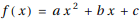が次の条件(A)、(B)、(C)を満たすとする。
(A) f(-1)=-1、f(1)=1
(B) -1≤x≤1を満たすすべてのxに対し、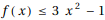
このとき、積分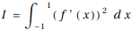のとりうる範囲を求めよ。
解答
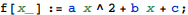
(A)の条件を使ってbとcについて解く。
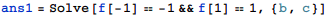
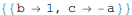
この結果を使って(B)をaについて解く。
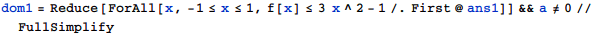
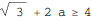
積分Iを計算し、aで表す(MathematicaでIは虚数単位に使われているのでI1とする)。
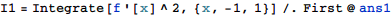
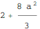
I1が取りうる範囲は方程式I1==kが実数解を持つためのkの範囲と考えることができて
従って求めるIの範囲は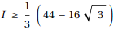